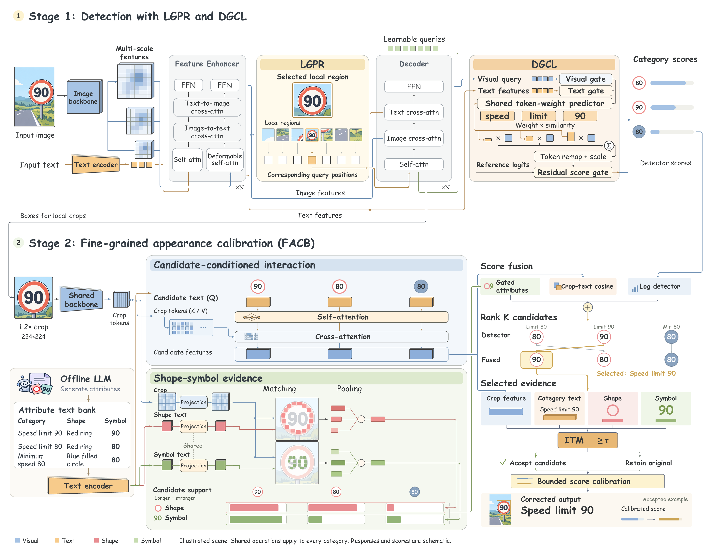

Computer vision / FAC-Det
Fine-grained
appearance calibration.
Traffic-sign detection with limited annotations.
细微之处，决定识别。
◈▧⌗⌁
60
80Local region
Shared contourDistinct identity
Appearance evidence ↗
ShapeShared contour
●SymbolLocal identity
●Local representation
形状相似，语义不同。
将局部证据带入类别判断。
将局部证据带入类别判断。
Image → Region → Appearance概念示意
Built onGrounding DINO+ModernBERTFine-grained perception
The idea相似的轮廓。
相似的轮廓。
不同的含义。
数字、形状与符号，构成交通标志的局部外观证据。FAC-Det 将这些细节与类别语义连接，让识别关注真正有区分度的区域。
Inside FAC-Det
探索完整架构 ↗让细节进入判断。
Local matching让局部差异
让局部差异
成为识别依据。
从裁剪区域提取外观特征，让共享的形状与符号描述对应到视觉细节。
Shape · Symbol · Appearance
The architecture
看见方法的全貌。
从区域检测，到细粒度外观校准。
查看完整模型架构 →
Open research
探索实现。
方法源码与项目说明。